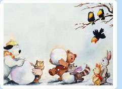
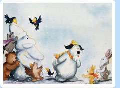

It was two days before Christmas. Harry, Cornelius, Monty and I were busy building a snowman when Fritz appeared with his little niece Emily and introduced her.
“Emily is from the South and has never seen snow before,” Fritz told us. “She doesn’t know much about our winters.”
It turned out Emily also didn’t know much about Christmas.”Who is Santa Claus, Waldo?” she asked me, shivering in the cold air.
“Santa Claus,” I explained, “brings presents and toys to human children at Christmas time.”
“Does he also bring presents to animal children?” Emily asked.
“Well,” I said, “he hasn’t been around this part of the forest for many years. I guess he is too busy visiting all the human children to have much time left for animals.”
“Do you think he will come if I write to him?” Emily asked.
“I don’t think so,” said Monty. “I’ve never seen him, myself.”
“Neither have I,” Harry added, shaking his head.
“You see. Santa Claus is only for human children,” Fritz said to Emily. “So forget about the whole idea. Let’s go home now before you catch a cold.”